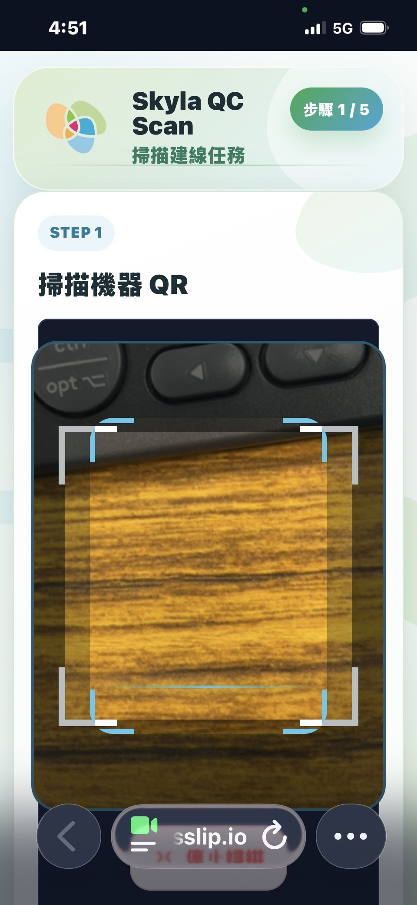
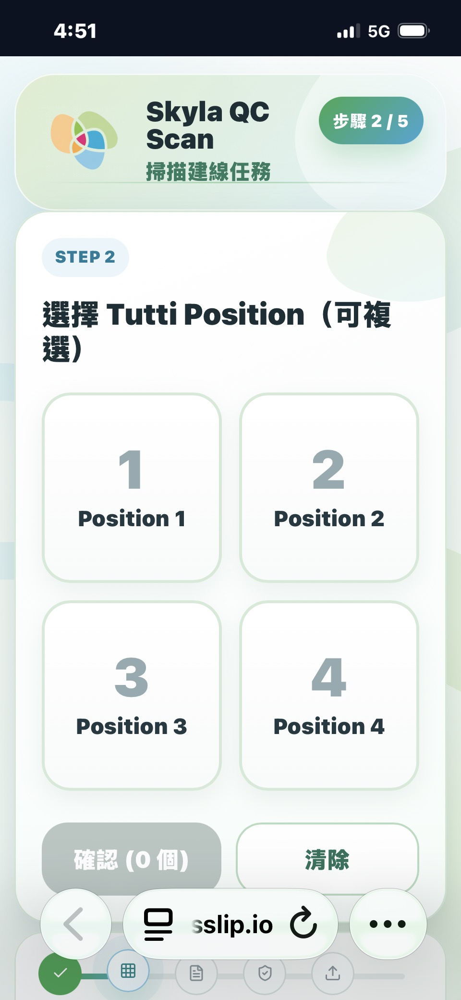
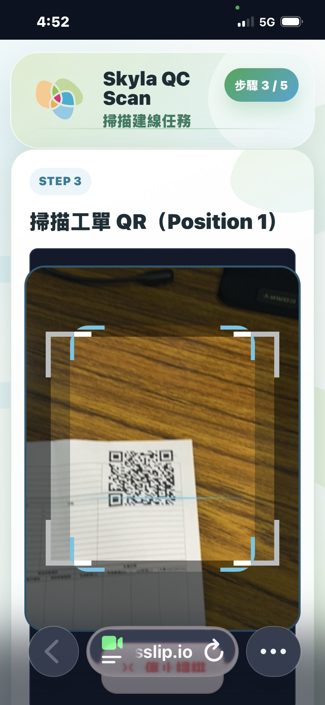
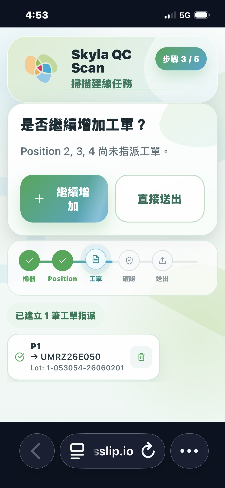
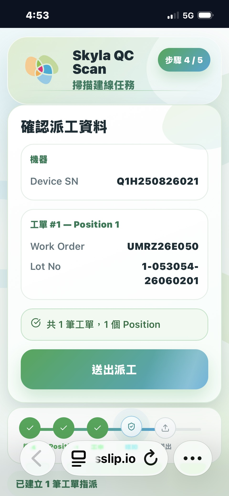
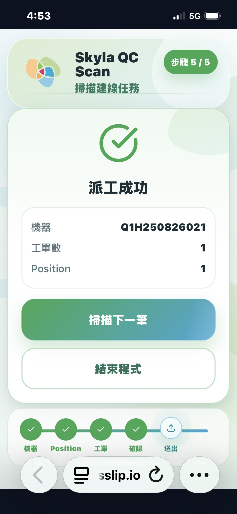
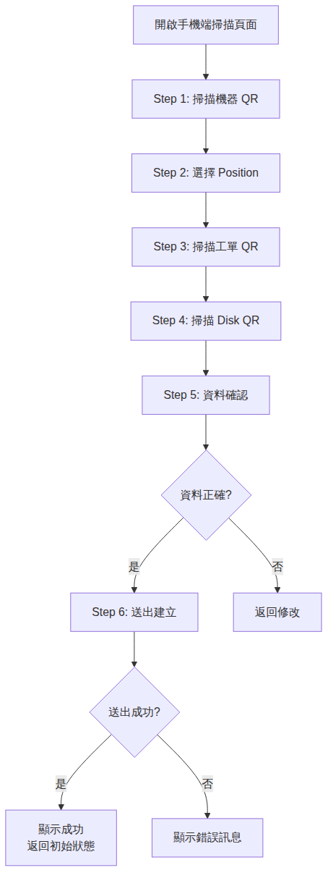

手機端建立測試資料
本章說明如何使用手機端進行建線掃描操作。手機端採用逐步引導式 QR 掃描流程，適用於現場操作人員在生產線旁快速建立測試資料。操作流程共分為 6 個步驟，依序完成機器識別、位置指定、工單綁定、Disk 綁定、資料確認與送出建立。
存取網址：https://52-192-28-39.sslip.io/qc-web/pre-assignment/tutti-scan
掃描操作步驟
-
掃描機器 QR
目的：識別機台。使用手機相機掃描機器上的 QR Code，系統將自動解析並識別對應的機台。成功後畫面顯示機台名稱。
輸入：機器 QR Code
成功結果：顯示機台名稱

-
選擇 Position
目的：指定位置。從下拉選單中選擇對應的 Position，確定測試資料的放置位置。成功後畫面顯示已選位置。
輸入：下拉選單選擇
成功結果：顯示已選位置

-
掃描工單 QR
目的：綁定工單。掃描工單上的 QR Code，將測試資料與對應工單進行綁定。成功後畫面顯示工單號。
輸入：工單 QR Code
成功結果：顯示工單號

-
掃描 Disk QR
目的：綁定 Disk。掃描 Disk 上的 QR Code，將 Disk 資訊與測試資料進行綁定。成功後畫面顯示 Disk 資訊。
輸入：Disk QR Code
成功結果：顯示 Disk 資訊

-
資料確認
目的：核對所有掃描資料。系統彙整前四步驟的掃描結果，操作人員需逐項確認資料無誤後方可進行下一步。
確認項目：機台名稱、Position、工單號、Disk 資訊

-
送出建立
目的：提交資料至系統。確認資料無誤後，點擊送出按鈕將所有掃描資料提交至系統建立測試記錄。

手機端與 PC 端差異比較
| 比較項目 | 手機端 | PC 端 |
|---|---|---|
| 輸入方式 | QR 掃描 | 表單輸入 |
| 操作流程 | 逐步引導式 | 單頁表單式 |
| 適用場景 | 現場掃描 | 辦公室管理 |
操作流程圖

錯誤處理
QR 解析失敗
顯示錯誤提示，可重新掃描。請確認 QR Code 清晰可辨識，避免反光或遮擋。
手動輸入替代
點擊手動輸入按鈕，直接輸入 QR 內容。當 QR Code 損壞或無法掃描時，可使用此替代方式完成操作。
工單與 Disk 批號不一致
系統提示不一致，需確認後才能送出。請核對工單號與 Disk 批號是否正確對應，確認無誤後可強制送出。